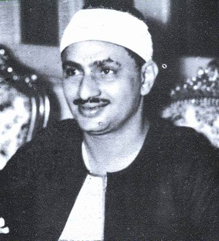

Muhammad Siddiq al-Minshawi, (January 1, 1920 – June 20, 1969)was an Egyptian Quranic reciter par excellence and was not in need of any introduction. He was the able son of the great Sheikh Siddiq al-Minshawi and his brother Sheikh Mahmoud Al-Minshawi is also an eminent Quran reciter.
Sheikh Muhammad Siddiq al-Minshawi studied Ilm e Tajweed under the guidance of the distinguished Sheikh Ibrahim As-Su’udi at a very young age. The video on the right is one of his many recitations that are merely perfection of the science of Tajweed
On the left is a picture of Minshawi with Sheikh Abdulbasit ,Sheikh Muhammad Siddiq al-Minshawi has visited many countries, including Indonesia, Jordan, Kuwait, Libya, Palestine (Al-Aqsa Mosque), Saudi Arabia and Syria, for the enhancement and propagation of Deen.